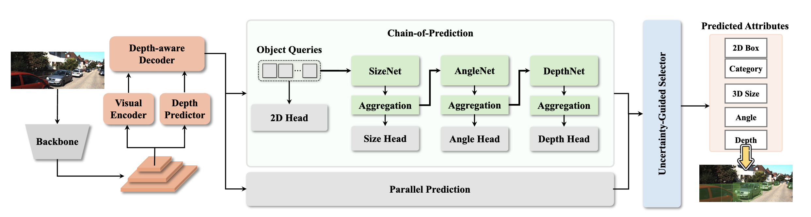
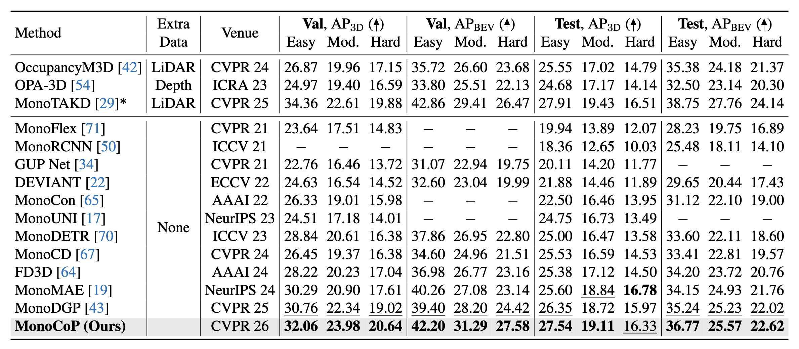
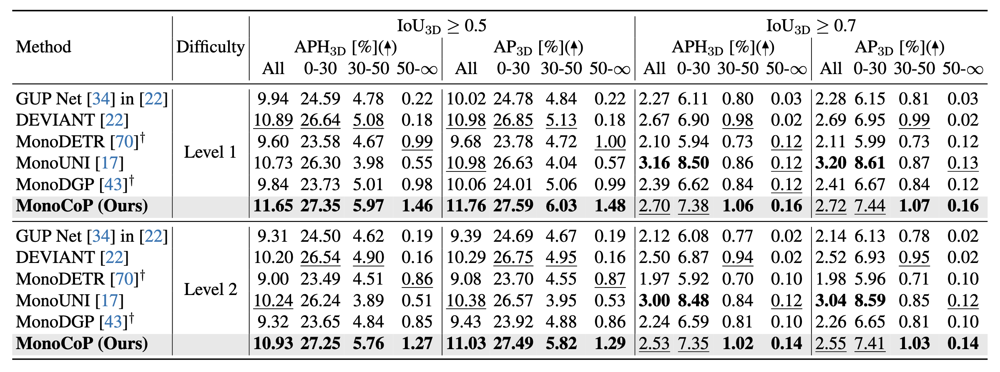
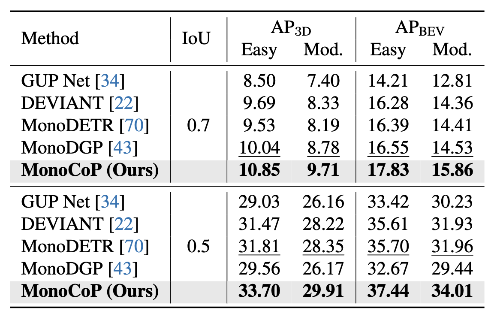
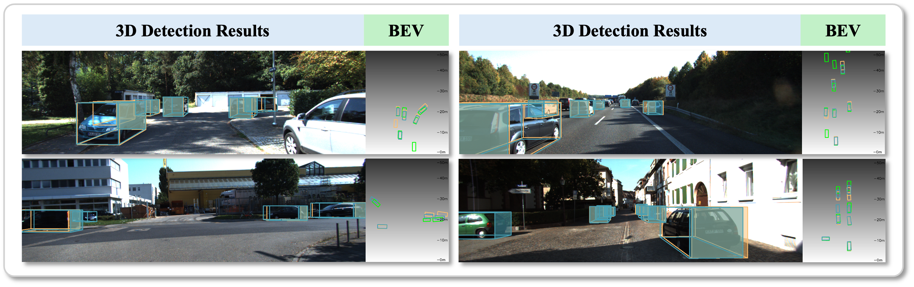

Abstract
Overall Pipeline

MonoCoP consists of two main components: a Chain-of-Prediction (CoP) and an Uncertainty-Guided Selector (GS) module. The CoP module predicts 3D attributes (depth, size, and orientation) sequentially, leveraging the correlation between attributes. The GS module dynamically switches between CoP and parallel paradigms for each object based on the predicted uncertainty.
KITTI Results

MonoCoP sets a new state of the art in monocular 3D object detection across KITTI leaderboard and KITTI Validation set.
Waymo Results

MonoCoP outperforms previous methods by a large margin in Waymo Validation set.
nuScenes Results

MonoCoP also achieves state-of-the-art performance in nuScenes Validation set.
Qualitative Results

BibTeX
@inproceedings{zhang2025unleashing,
title={Unleashing the Power of Chain-of-Prediction for Monocular 3D Object Detection},
author={Zhang, Zhihao and Kumar, Abhinav and Ganesan, Girish Chandar and Liu, Xiaoming},
booktitle={Proceedings of the IEEE/CVF Conference on Computer Vision and Pattern Recognition},
year={2026}
}